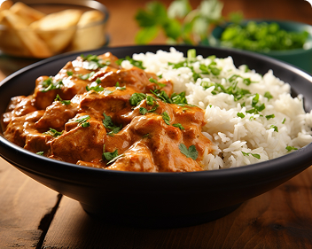
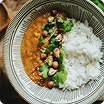

Poulet au Curry



4
30min
30min
Détails
Cette recette peut être adaptée en fonction de vos préférences en matière d'épices. N'hésitez pas à ajouter plus de légumes ou à ajuster le niveau de piquant en ajoutant des flocons de piment ou des piments frais.
Ingrédients
- 450 g de blancs ou de cuisses de poulet désossés et sans peau
- 1 oignon
- 2 gousses d’ail
- 1 cuillère à soupe de gingembre râpé ou haché
- 2 cuillères à soupe de poudre de curry (à ajuster selon le goût)
- 1 boîte de tomates en dés
- 1 boîte de lait de coco
- Sel et poivre, selon le goût
- Feuilles de coriandre fraîche, hachées
- Riz cuit ou pain naan, pour accompagner
Etapes
- Émincez l'oignon, hachez l’ail, râpez ou hachez le gingembre, et découpez le poulet en morceaux de taille égale.
- Dans une grande poêle ou une cocotte, faites chauffer un peu d’huile. Ajoutez l’oignon et faites-le revenir jusqu’à ce qu’il soit translucide. Ajoutez ensuite l’ail et le gingembre, puis faites revenir 1 à 2 minutes de plus
- Ajoutez les morceaux de poulet dans la poêle et faites-les dorer de tous les côtés
- Saupoudrez le curry en poudre sur le poulet et mélangez bien pour enrober tous les ingrédients. Laissez cuire 1 à 2 minutes pour faire ressortir les arômes
- Ajoutez les tomates en dés (avec leur jus) et le lait de coco. Mélangez bien. Portez à ébullition, puis réduisez le feu et laissez mijoter à couvert pendant environ 20 minutes, ou jusqu’à ce que le poulet soit bien cuit et la sauce légèrement épaissie.
- Salez et poivrez selon votre goût. Si vous aimez les plats plus épicés, vous pouvez ajouter des flocons de piment ou du piment frais à ce stade
- Parsemez de coriandre fraîche hachée et servez chaud avec du riz basmati ou du pain naan.